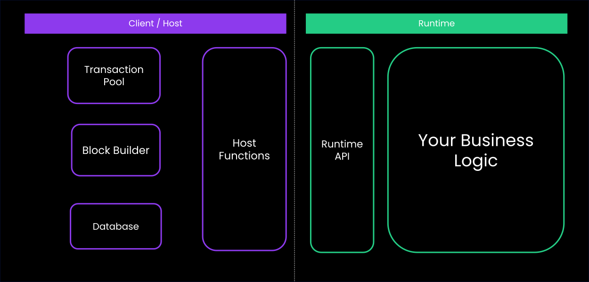

<!DOCTYPE html>
<html lang="en">

<head>
  <meta charset="utf-8" />
  <meta name="viewport" content="width=device-width, initial-scale=1.0, maximum-scale=1.0, user-scalable=no" />

  <title>Frameless Workshop</title>
  <link rel="icon" href="./../../../assets/favicon.svg" />
  <link rel="shortcut icon" href="./../../../assets/favicon.png" />
  <link rel="stylesheet" href="./../../../dist/reset.css" />
  <link rel="stylesheet" href="./../../../dist/reveal.css" />
  <link rel="stylesheet" href="./../../.././assets/styles/PBA-theme.css" id="theme" />
  <link rel="stylesheet" href="./../../../css/highlight/shades-of-purple.css" />

  <link rel="stylesheet" href="./../../.././assets/styles/custom-classes.css" />

</head>

<body class="site">
  <header class="site-header">
    <!-- This logo is a link only on the watching server, not the production build -->
    <a href="">
      
    </a>
  </header>
  <main class="reveal">
    <article class="slides">
      <section  data-markdown><script type="text/template">

## FRAME-less Workshop

Building Substrate Runtime without the FRAME abstractions.
</script></section><section ><section data-markdown><script type="text/template">
## Why Frameless?

- FRAME abstracts away significant complexity
- Understanding what happens "under the hood"
- FRAME is one opinionated way - but not the only way

<aside class="notes"><ul>
<li>This workshop helps you appreciate what FRAME does for you</li>
<li>You&#39;ll implement manually what FRAME automates</li>
</ul>
</aside></script></section><section data-markdown><script type="text/template">
## Learning Goals

1. **Understand Core Primitives** - Storage, extrinsics, block lifecycle
2. **Appreciate FRAME's Value** - By experiencing the complexity it abstracts
3. **Gain Low-Level Knowledge** - Direct interaction with Substrate APIs
4. **Build Confidence** - Work with Substrate at any abstraction level
</script></section></section><section ><section data-markdown><script type="text/template">
## Runtime with FRAME


<aside class="notes"><ul>
<li>FRAME provides pallets, storage abstractions, events, errors</li>
<li>All of this sits on top of Substrate primitives</li>
</ul>
</aside></script></section><section data-markdown><script type="text/template">
## Runtime without FRAME


</script></section></section><section ><section data-markdown><script type="text/template">
## Host Functions

```rust
// Direct storage access
sp_io::storage::set(KEY, &value.encode());
```

<aside class="notes"><ul>
<li>No pallets, no storage macros, no event system</li>
<li>Direct manipulation of primitives</li>
</ul>
</aside></script></section><section data-markdown><script type="text/template">
## Runtime APIs

```rust
// Manual extrinsic handling
fn apply_extrinsic(ext: Vec<u8>) -> Result<(), ()> {
// Decode, validate, execute...
}

// Manual block lifecycle
fn initialize_block(header: &Header) { }
fn finalize_block() -> Header { }
```

<aside class="notes"><ul>
<li>We&#39;ll implement the runtime&#39;s role in this cycle</li>
<li>Focus on initialize → apply → finalize</li>
</ul>
</aside></script></section></section><section  data-markdown><script type="text/template">
## Prepare

- Clone `Polkadot-Blockchain-Academy/frameless-runtime-template`
- wscat/curl.
</script></section><section  data-markdown><script type="text/template">
## Setup

- Install the omni-node.
- Compile the runtime wasm.
- Run your Node.

<aside class="notes"><ul>
<li><code>cargo install --force --locked --git https://github.com/Polkadot-Blockchain-Academy/pba-omni-node</code></li>
<li><code>cargo build --release</code></li>
<li><code>pba-omni-node --runtime &lt;runtime&gt; --tmp --consensus manual-seal-1000</code></li>
</ul>
</aside></script></section><section  data-markdown><script type="text/template">
## Walk through

- Author Block
- Import Block
</script></section><section  data-markdown><script type="text/template">
## Set Value

- FIXME-01: Make `import_and_author_equal` pass.
</script></section><section  data-markdown><script type="text/template">
## Mint Balance

- FIXME-02: Uncomment and make `mint_balance_works` pass.
</script></section><section  data-markdown><script type="text/template">
## Transfer Balance

- FIXME-03: Uncomment and make `transfer_balance_works`
</script></section><section  data-markdown><script type="text/template">
## Bonus

- Call to vote with your balance.
- Signature Verification.
- Nonce Validation.
</script></section><section ><section data-markdown><script type="text/template">
## Build Chain spec

```bash
  cargo install staging-chain-spec-builder
  chain-spec-builder --help
```

<aside class="notes"><p><a href="https://docs.polkadot.com/develop/parachains/deployment/generate-chain-specs/">https://docs.polkadot.com/develop/parachains/deployment/generate-chain-specs/</a></p>
</aside></script></section><section data-markdown><script type="text/template">
## Build Chain spec

```bash
  chain-spec-builder create -r INSERT_RUNTIME_WASM_PATH INSERT_COMMAND
```

<aside class="notes"><p><a href="https://docs.polkadot.com/develop/parachains/deployment/generate-chain-specs/">https://docs.polkadot.com/develop/parachains/deployment/generate-chain-specs/</a></p>
</aside></script></section></section>
    </article>
  </main>

  <script src="./../../../dist/reveal.js"></script>

  <script src="./../../../plugin/markdown/markdown.js"></script>
  <script src="./../../../plugin/highlight/highlight.js"></script>
  <script src="./../../../plugin/zoom/zoom.js"></script>
  <script src="./../../../plugin/notes/notes.js"></script>
  <script src="./../../../plugin/math/math.js"></script>

  <script src="./../../../assets/plugin/mermaid.js"></script>
  <script src="./../../../assets/plugin/mermaid-theme.js"></script>

  <script src="./../../../assets/plugin/chart/chart.js"></script>
  <script src="./../../../assets/plugin/chart/chart.min.js"></script>

  <script src="./../../../assets/plugin/tailwindcss.min.js"></script>

  <script>
    function extend() {
      var target = {};
      for (var i = 0; i < arguments.length; i++) {
        var source = arguments[i];
        for (var key in source) {
          if (source.hasOwnProperty(key)) {
            target[key] = source[key];
          }
        }
      }
      return target;
    }

    // default options to init reveal.js
    var defaultOptions = {
      controls: true,
      progress: true,
      history: true,
      center: true,
      transition: 'default', // none/fade/slide/convex/concave/zoom
      slideNumber: true,
      mermaid: {
        startOnLoad: false,
        logLevel: 3,
        theme: 'base',
        themeVariables: {
          primaryColor: purple,
          primaryTextColor: white,
          primaryBorderColor: pink,
          lineColor: pink,
          secondaryColor: lightPurple,
          tertiaryColor: lightPurple,
        },
      },
      chart: {
        defaults: {
          color: 'lightgray', // color of labels
          scale: {
            beginAtZero: true,
            ticks: { stepSize: 1 },
            grid: { color: "lightgray" }, // color of grid lines
          },
        },
        line: { borderColor: ["#ccc", "#E6007A", "#6D3AEE"], "borderDash": [[5, 10], [0, 0]] },
        bar: { backgroundColor: ["#ccc", "#E6007A", "#6D3AEE"] },
      },
      plugins: [
        RevealMarkdown,
        RevealHighlight,
        RevealZoom,
        RevealNotes,
        RevealMath,
        RevealMermaid,
        RevealChart
      ]
    };

    // options from URL query string
    var queryOptions = Reveal().getQueryHash() || {};

    var options = extend(defaultOptions, {"width":1400,"height":900,"margin":0,"minScale":0.2,"maxScale":2,"transition":"none","controls":true,"progress":true,"center":true,"slideNumber":true,"backgroundTransition":"fade"}, queryOptions);
  </script>


  <script>
    Reveal.initialize(options);
  </script>
</body>

</html>
